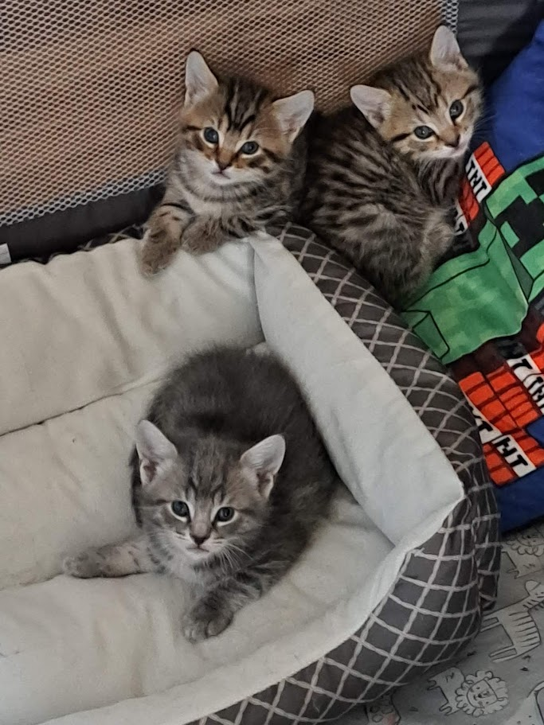
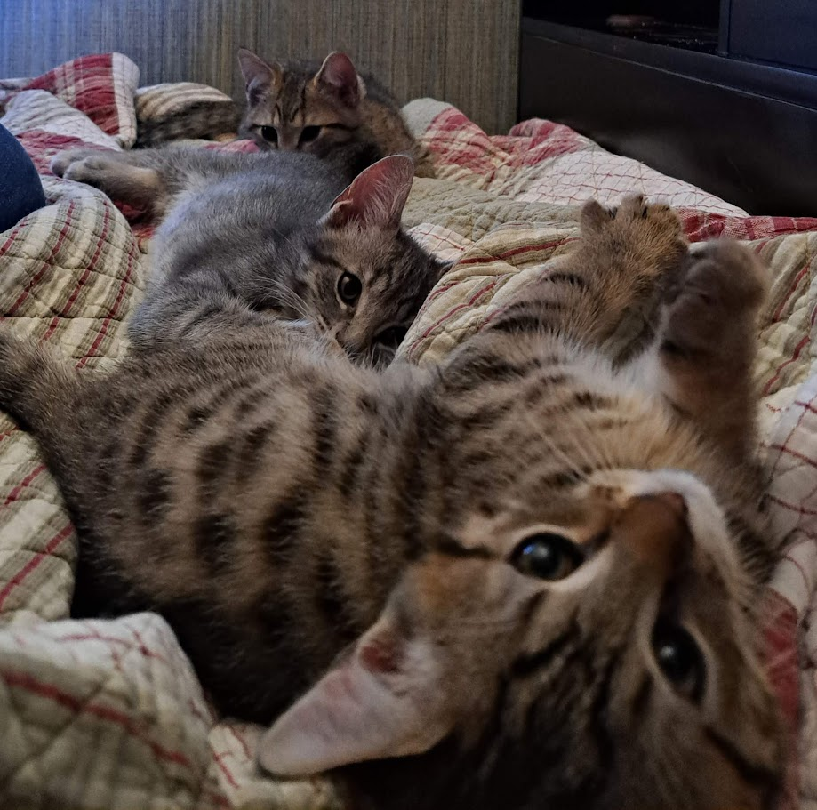

This project is two things: my attempt to share some small part of what I've learned about African continuity in North America, and my painstaking effort to learn how to design a website from scratch. I'm not sure if it succeeds at either, but I somehow enjoyed the latter.
I spent a bit of March 5th and most of March 6th developing the code. I wrote all three articles on March 7th. I wrote “Between the living and the dead” first, and by the time I got to the other two articles I was drained. In this first article, the information is better, the writing is better, and the design is better (I tried some coding tidbits I did not try with the other two). Though just because it is better does not mean it is good; I make no claim to that effect.
I was initially planning to design an interactive map for this website. I did not manage to do so, only for lack of time. The map on the homepage is a static image, and the link that was supposed to lead to the interactive leads back to the homepage. The search bar in the header does not work (also a lack of time), but the search bars in both the Articles and the Glossary section do work. Either way, if you judge me by anything, judge me by that page and my (admittedly incomplete) glossary.
I find most modern websites excessively busy or sleek. I wanted to go for a more papery design. For that reason, I avoided a logo, used a serif font, and stuck to a light sepia background.
Just for the hell of it, I added accessibility features to many parts of the website, though not all.
Full disclosure: I did most of the coding myself, but I did consult an AI for some JavaScript elements. That said, I tried to follow explanations rather than copy-pasting cleanly from one to the other. Best for learning.
Finally, a few pictures of my cats, whose unerring gaze ensured the completion of this project. (They were not here at any point, for I am on campus, and these pictures are three years old, but alas, a little white lie never hurt anyone. I just want to share my cats.)

